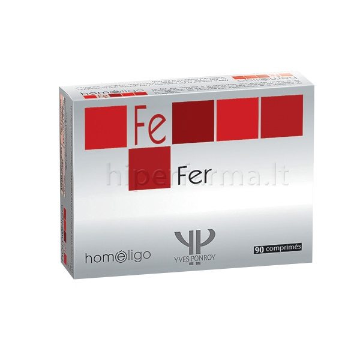

Geležies trūkumas ir TOP 10 daugiausiai geležies turinčių produktų — GERA KARMA™
 × PIRKTI KODĖL PIRKTI SKAITYTI APIE MUS KONTAKTAI Kaip užsisakyti? Pristatymas Užsakymo sekimas Mano paskyra ×Kažko ieškote? Pasinaudokite paieška.
NEMOKAMAS PRISTATYMAS VISOJE LIETUVOJE! Kaip užsisakyti? Pristatymas Užsakymo sekimas Mano paskyra PIRKTI KODĖL PIRKTI SKAITYTI APIE MUS KONTAKTAI 0Krepšelis
Geležies trūkumas ir TOP 10 daugiausiai geležies turinčių produktų
PUBLIKAVO Andrejus Petruša on 2019-03-30 TEMA DumbliaiAr Jūsų valgiaraštyje yra pakankamai produktų turinčių daug geležies?
Geležis yra mineralas, kurio randama kiekvienoje mūsų kūno ląstelėje. Ji yra esminė baltymų hemoglobino ir mioglobino sudedamoji dalis. Hemoglobinas yra pagrindinė raudonosios kraujo ląstelės sudedamoji dalis, kuri perneša deguonį audiniams. Mioglobinas yra raumens ląstelės dalis, kuri kaupia deguonį.
Remiantis Ligų kontrolės ir prevencijos centrų duomenimis, geležies trūkumas yra dažniausiai pasitaikanti nepakankamos mitybos priežastis. Geriausias būdas užsitikrinti, kad jums netrūktų šios svarbaus mineralo, kasdien valgyti daug geležies turinčių produktų. Kokie maisto produktai jos turi? Aš Jums pateiksiu TOP 10 daugiausiai geležies turinčių maisto produktų, įskaitant mėsą, žuvį, pupeles, riešutus, daržoves ir netgi keletą vaisių.
Top 10 daugiausiai geležies turinčių produktų
Kokiuose maisto produktuose gausu geležies? Yra daugybė puikių geležies šaltinių, iš kurių galima rinktis, tačiau aš pateiksiu mano mėgstamiausius gausiai geležies turinčius produktus, kurie be abejo, nusipelnė aukščiausio įvertinimo.
Spirulina (mėlynasis dumblis): ~30 gramų yra net 8 mg geležies (44% dienos normos). Spirulina yra melsvai žalios spalvos dumblis, atskiriamas dėl savo sodraus skonio ir plataus naudojimo mityboje. 8 mg užtikrina pusę paprastai rekomenduojamos geležies dienos normos. Tai ypatingai svarbu vegetarams, kai geležies reikia gauti iš augalinių produktų, todėl spirulina, be abejo, yra geriausias pasirinkimas. Jame taip pat yra svarbiausių amino rūgščių, geležies, baltymų, B vitaminų bei C,D ir E vitaminų. Daug geležies yra kitame melsvadumblyje chlorella. Kepenys. ~100 gramų ekologiškų jautienos kepenų turi 4,05 mg geležies (22,5 % dienos normos). Kalbant apie geležį, o yapatingai gyvulinės kilmės, kepenys yra geriausias pasirinkimas. Jeigu jums yra bet kokios rūšies anemija, aiškus geležies trūkumas, kepenys yra tinkamiausias maistas pasaulyje, nes jame yra ne tik geležies, bet ir folatų bei vitamino B12. Norint išvengti anemijos, šie trys vitaminai ir mineralai jums yra būtini. Žole šeriamų galvijų mėsa. Vienas liesas žole šeriamų galvijų kepsnys (214 gramų) turi 4mg geležies (22% dienos normos). Žole šeriamų galvijų mėsa yra dar vienas puikus gyvulinės kilmės geležies bei kitų maistingų medžiagų šaltinis. Žole šeriamų galvijų mėsoje be geležies taip pat yra didesnis kiekis su vėžiu kovojančių antioksidantų A ir E kiekis, nei grūdais šeriamų galvijų mėsoje. Lęšiai. ½ puodelio yra 3,3 mg geležies (19% dienos normos). Šie ankštiniai turi gana įspūdingą kiekį augalinės kilmės geležies vienoje porcijoje. Be to, kad lęšiai turi daugybę maistingų medžiagų ir papildo mitybą baltymais, jie yra gana pigūs ir plačiai vartojami. Juodasis šokoladas. ~30 gramų yra 3,3 mg geležies (19% dienos normos).Jeigu perkate aukštos kokybės juodą šokoladą, jūs ne tik patenkinate savo saldumynų poreikį, bet taip pat gaunate nemažą kiekį geležies. Jums reikia tik ~30 gramų, kad gautumėte 20% rekomenduojamos paros normos. Dabar tai yra dar vienas sveikas skanėstas! Špinatai. ½ puodelio virtų turi 3,2 mg ( 17,8 % dienos normos). Šiuose žaliuose lapuose yra gausu geležies bei daugybė kitų maistingų medžiagų. Kaip viena iš daugiausiai geležies turinčių daržovių, špinatai skanūs tiek žali, tiek virti. Tačiau virtų špinatų suvalgysite daugiau, nes jie suverda, tai reiškia, kad suvartosite dar daugiau geležies. Sardinės. ¼ puodelio yra 1,8 mg (10% dienos normos). Šios mažos žuvys turbūt geriausiai yra žinomos dėl didelės omega-3 rūgščių ir vitamino D koncentracijos. Jose taip pat yra nemažas kiekis geležies. Konservuotų sardinių yra nesunku rasti daugelyje parduotuvių už prieinamą kainą. Išbandykite jas gamindami padažus, salotas ar makaronų patiekalus. Juodosios pupelės. ½ puodelio yra 1,8 mg (10% dienos normos). Juodose pupelėse yra gausu geležies, baltymų bei skaidulinių medžiagų. Jos suteikia ilgalaikės energijos krakmolo pavidalu, kuris virsta puikiu angliavandenių šaltiniu tiems, kurie turi atsparumą insulinui (hormonas, mažinantis cukraus kiekį kraujyje), taip pat ir tiems, kas serga diabetu ar turi riziką juo sirgti. Pistacijos. ~30 gram yra 1,1 mg (6,1 % dienos normos). Norinties numesti svorio ir tiems, kas ieško sveikų užkandžių, labiausiai rekomenduojamos maistingosios pistacijos. ~30 gramų arba 49 branduoliuose (standartinė porcija) yra geležies, taip pat vitamino B6 (25% dienos normos), tiamino (20% dienos normos) ir vario (20% dienos normos). Iš riešutų, pistacijos yra vienas geriausių geležies šaltinių. Razinos. ¼ puodelio yra 1,1 mg (6,1 % dienos normos). Kalbant apie razinų maistingąsias medžiagas, vienas svarbiausių dalykų yra gausus kiekis geležies. Dar geležies gausu slyvose ir figose.Geležies trūkumo epidemija
Nustatyta, kad 80 % visų pasaulio gyventojų trūksta geležies, o 30% serga geležies stokos anemija. Akivaizdu, kad daugelis žmonių nevartoja pakankamai geležies turinčių produktų.
Vidutinės ar stiprios anemijos (geležies trūkumo) simptomai:
• Bendras nuovargis
• Silpnumas
• Išbalusi oda
• Oro trūkimas
• Galvos svaigimas
• Keistas potraukis valgyti nevalgomus daiktus, tokius kaip purvas, ledas ar molis
• Dilgčiojimas ar skruzdžių bėgiojimas kojose
• Liežuvio tinimas ar skausmas
• Šaltos plaštakos ir pėdos
• Greitas ar nereguliarus pulsas
• Trapūs nagai
• Galvos skausmas
• Bloga koncentracija
• Susilpnėjusi imuninė sistema
• Viduriavimas ar dirglaus žarnyno sindromas
Žmonės, kuriems yra didesnė rizika sirgti anemija:
• Vaisingo amžiaus moterys, ypatingai tos, kurioms yra gausios mėnesinės
• Nėščios moterys
• Žmonės su nepakankma mityba
• Dažni kraujo donorai
• Ankščiau gimę kūdikiai ir sparčiai augantys vaikai
• Vėžiu sergantys pacientai
• Širdies veiklos sutrikimų turintys žmonės
• Virškinimo veiklos sutrikimų turintys ar virškinimo organų operaciją patyrę žmonės.
• Vegetarai, kurie nepakeičia mėsos kitu geležies turinčiu maistu.
Vartoti daug geležies turinčių produktų ypač svarbiau vaisingo amžiaus moterims nei vyrams, nes kiekviena mėnesį jos netenka kraujo.
Jeigu jums trūksta geležies, yra svarbu gauti pakankamai vitamino C, nes jis pagerina geležies įsisavinimą. Vyrams ir vyresnėms moterims rekomenduojama suvartoti 8 mg geležies per dieną, vaisingo amžiaus moterims 18 mg. Vegetarams geležies suvartoti rekomenduojama 1,8 karto daugiau nei valgantiems mėsą dėl to, kad iš mėsos gaunama gyvulinės kilmės geležis yra lengviau pasisavinama nei iš augalinio maisto. Taip pat mėsa, paukštiena ir jūros maistas pagerina augalinės kilmės geležies pasisavimą.
5 naudingos geležies savybės
Energija. Geležies trūkimas reiškia, kad jūsų organizmas negali pakankamai pagaminti raudonųjų kraujo ląstelių, todėl jam pasidaro sunku deguonimi aprūpinti smegenis, audinius, raumenis ir ląsteles, dėl ko jūs jaučiatės pavargęs ir nusilpęs. Energijos trūkumas ir nuovargis yra geležies anemijos simptomai. Dėl anemijos jums gali trūkti oro,svaigti ar skaudėti galvą, šalti pėdos ir plaštakos, skaudėti krūtinę, būsite išbalę ar jausite nuovargį.Geležis palaiko nuolatinę energiją padėdama ląstelėms gauti pakankamai deguonies. Ji taip pat padeda metaboliniams fermentų procesams, kuriuos organizmas atlieka, kad virškintų baltymus ir įsisavintų maistines medžiagas iš maisto. Štai kodėl geležies stygius sukelia išsekimą, sunkumą būti aktyviams ir daug kitų vangumo pojūčių. Raumenų funkcija. Geležis reikalinga raumenų judėjimui, nes ji padeda palaikyti deguonį raumenyse, leidžiantį jiems judėti ir būti stipriems. Apie 70% visos jūsų kūno geležies galima rasti kraujyje raudonosose kraujo ląstelėse vadinamomis hemoglobinu, taip pat raumnų ląstelėse esančiame mioglobine. Hemoglobinas yra būtinas norint pernešti deguonies kiekį kraujyje iš plaučių į audinius. Mioglobinas raumenų ląstelėse priima, saugo, transportuoja ir išskiria deguonį. Be geležies, svarbiausios ląstelės raumenyse, vadinamos mioglobinu, negali turėti deguonies. Be deguonies šios ląstelės negali tinkamai veikti, dėl to atsiranda raumenų silpnumas. Smegenų funkcija. Kad tinkamai veiktų, smegenims deguonis yra būtinas. Jei trūksta geležies, smegenys negauna reikiamo kiekio deguonies, todėl prastėja atmintis, sumažėja darbingumas ir apima aptija. Vaikai, kuriems trūksta geležies gali tapti dirglūs, neramūs, jiems sunku susikaupti klasėje. Šie simptomai paprastai išnyksta atkūrus geležies kiekį. Daugybė tyrimų su žmonėmis parodė, kad geležies trūkumas daro neigiamą poveikį mokymuisi ir atminčiai bei socialiniam elgesiui. Geležies trūkumas pirmaisiais gyvenimo metais ypač su tuo susijęs. Mokslininkai mano, kad tai gali įtakoti mokymąsi ir atmintį. Nacionalinės mokslų akademijos leidinyje paskelbtoje ataskaitoje aptariama, kad net sveiki jauni suaugusieji gali turėti smegenų struktūros vientisumo pakitimų, susijusius su geležies kiekio pokyčiais. Sveikas nėštumas. Nėščios moterys nėštumo metu turėtų suvartoti daugiau geležies turinčių maisto produktų kaip nei bet kas kitas, nes ne tik joms reikia geležies, bet taip vaisiui ir palcentai. Nėščių moterų geležies poreikis yra maždaug 27 miligramai per parą, o toks kiekis dažnai būna prenataliniuose multivitaminuose. Nėščios moterys taip pat turėtų apsvarstyti galimybę vartoti daugiau sveikų riebalų ir folio rūgšties turinčių maisto produktų nėštumo metu. Pasak Pasaulio sveikatos organizacijos, geležies trūkumas nėštumo metu gali padidinti motinų ir kūdikių mirtingumo, ankstyvo gimdymo ir mažo naujagimių svorio riziką. Neramių kojų sindromas. Neramių kojų sindromas yra būklė, kuriai būdingi nemalonūs jutimai kojose, kurie skanina jas judinti, kad būtų lengviau. Apskaičiuota, kad su neramių kojų sindromu kasmet susiduria daugiau nei vienas iš 10 amerikiečių suaugusiųjų (apie 12 mln. žmonių).
Yra žinoma, kad mažas geležies kiekis yra svarbus neramių kojų sindromui atsirasti. Jei geležies trūkumas yra pagrindinė neramių kojų sindromo priežastis, jums reikės vartoti daug geležies turinčių maisto produktų ir daug B vitaminų, įskaitant folio rūgštį.
Daug geležies turinčių maisto produktų vartojimo atsargumo priemonės
Geriausia būdas gauti gauti geležies yra reguliariai vartojant geležies turinčius maisto produktus. Vartoti geležies papildus turėtume tik tuo atveju, jei jums ištikrųjų trūksta geležies bei pasitarę su sveikatos priežiūros specialistu. Dažniausias geležies papildų šalutinis poveikis yra skrandžio veiklos sutrikimas, pykinimas, viduriavimas, vidurių užkietėjimas ir rėmuo.
Jei įtariate, kad trūksta geležies, kraujo tyrimas gali atskleisti esamą geležies kiekį.
Svarbiausios mintys apie geležies turinčius produktus
Nors geležies trūkumas yra labai dažnas, laimei jis yra išgydomas. Geriausias būdas išvengti geležies trūkumo arba jį panaikinti, yra kasdien valgyti geležies turintį maistą. Kartais gali prireikti geležies papildų, tačiau maisto produktų, kurių sudėtyje yra geležies, kasdieninis vartojimas yra natūralus ir saugus būdas padidinti geležies kiekį.
Daugiausiai geležies turintys maisto produktai yra spirulina (mėlynasis dumblis), kepenys, žole šeriamų galvijų mesa (jautiena), lęšiai, juodasis šokoladas, špinatai, sardinės, juodosios pupelės, pistacijos ir razinos. Be to, kad šių produktų vartojimas padeda išvengti anemijos ir geležies trūkumo, pagerėja raumenų ir smegenų funkcija, padaugėja energijos. Geležis taip pat yra gyvybiškai svarbi sveikam nėštumui ir gali padėti gydyti neramių kojų sindromą
Taigi, jei nevalgote daug geležies turinčių maisto produktų, raginu jus pradėti šiandien.
Geležies nauda Geležies trūkumas Geležis Produktai turintys geležies Taip pat skaitykite Spirulina nauda: 10 tyrimais įrodytų faktų Next Reading Chlorella nauda: 7 moksliškai įrodytos savybėsPalikite komentarą Atšaukti atsakymą
Taisyklės Privatumo politika Karjera Partneriams DUK Visos autorinės teisės saugomos © 2020 GERA KARMA™ - Patentuotas ir saugomas prekės ženklas Lietuvoje.BIYOMA maisto papildai "Advanced Formula" čia ! Nemokamas pristatymas visoje Lietuvoje! Atšaukti